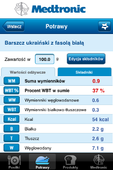
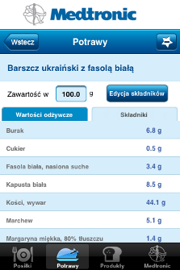
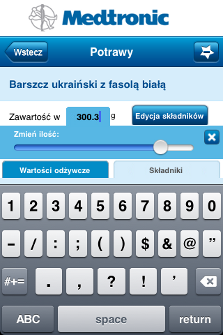

Zakładka Potrawy przedstawia pobrane z bazy Instytutu Żywienia potrawy wraz z ich składem oraz potrawy dodane przez użytkownika (o dodawaniu własnych potraw przeczytasz w zakładce "Dodawanie potraw").
Podobnie jak przy liście produktów - lista potraw podzielona jest na zakładki:
Ulubione - to potrawy dodane do ulubionych przez użytkownika (więcej w sekcji "Ulubione" w zakładce Pomoc).
Kategorie - potrawy są skatalogowane za pomocą kategorii.
Wszystkie - dostępne aktualnie w aplikacji potrawy, ułożone alfabetycznie.
Aby przejść do konkretnej potrawy należy kliknąć zakładkę Potrawy, następnie wybrać jedną z potraw.

W szczegółach potrawy, oprócz wartości odżywczych i wyliczonych WW (wymienniki węglowodanowe) ,WBT (wymienniki białkowo - tłuszczowe), WM (suma wymienników) i procentu WBT, znajduje się spis jej składników.

Na ekranie dotyczącym szczegółów potrawy możemy też przeliczyć wartości i jej skład dla pożądanej wagi, klikająć na aktualną wagę i wpisując nową wartość lub posługując się suwakiem.
